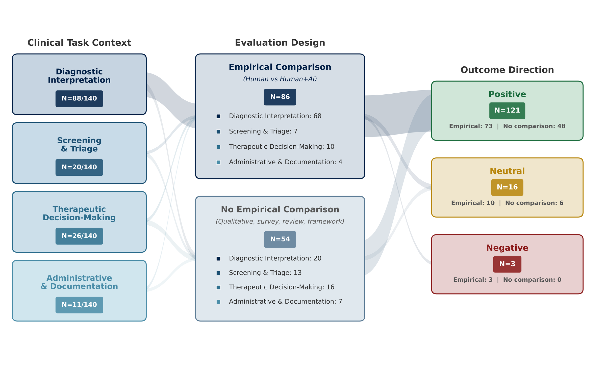

Scoping review · Human–AI collaboration
Human-AI Collaboration in Healthcare: A Scoping Review
What makes AI a useful teammate in healthcare? This review looks beyond the model to the task, the workflow and the person using it.
npj Digital Medicine, 9, article 768 · · Open access

Figure 2. Mapping the evidence. Follow the studies from their clinical task, through their evaluation design, to the direction of their reported outcomes. Clinical task categories overlap, and the outcome counts describe individual studies rather than a pooled estimate of how effective human–AI collaboration is.
Reproduced from Strong et al. (2026), Figure 2, under CC BY 4.0. Displayed at reduced resolution for the web. Open the full-size figure ↗
- 140
- studies included
- 17,463
- records identified
- 2015–2025
- publication window reviewed
The question behind the review
An accurate AI model is only one part of a successful healthcare tool. Clinicians need to understand when to use its advice, how to check it and how it fits into their work.
This review brings together empirical studies of people working with AI in healthcare. It asks how collaboration is evaluated, what helps it succeed, and how safety and accountability are addressed.
What did the review find?
- The task matters. Success might mean more accurate interpretation, faster triage or less time documenting care. These are different goals, so a single performance measure cannot capture them all.
- Collaboration needs a good fit. Many studies reported benefits, especially in diagnostic interpretation. Workflow integration, training and appropriately calibrated trust shaped those benefits.
- Patient outcomes need more attention. Short-term task measures dominated. Accountability and patient safety were often discussed, but rarely tested directly.
Studies could cover more than one task, so the counts overlap. Redrawn from the paper’s Results; bar lengths show study counts, not effectiveness.
How was the evidence gathered?
Open the methods in plain language
The team searched five sources for English-language research published between January 2015 and October 2025. Two reviewers independently screened records and full papers, resolving disagreements together.
The review mapped tasks, collaboration approaches, evaluation measures and recurring themes. It followed Joanna Briggs Institute scoping review methods and PRISMA-ScR reporting guidance.
What does this mean?
Evaluate the whole collaboration. The findings suggest that a useful evaluation should connect model performance with how people use the tool, the work it creates and what happens to patients.
Our plain-language interpretation of the paper’s Discussion.
What can’t this review tell us?
A scoping review maps the literature. It does not establish a single overall effect of AI assistance. The studies used different tasks, designs and outcomes; the team did not perform a quantitative meta-analysis or formal risk-of-bias grading.
Benefits reported in one setting may not transfer to another, and improvements in task performance do not by themselves establish better patient outcomes.
Behind the paper
Q&A with the author
Joshua Strong discusses why the team brought this evidence together and what healthcare teams can take from it.
What motivated this review?
Human–AI collaboration is a rapidly growing field, with increasing importance in healthcare as AI systems become more capable. Yet the research is quite fragmented, spread across different disciplines, clinical settings and approaches to collaboration.
We wanted to bring those strands together and take stock of what the existing work could tell us. By identifying recurring lessons and gaps in the evidence, we hoped to provide a clearer foundation for researchers and healthcare teams as the field develops.
Which findings surprised you most?
To be honest, the broad findings were largely what we expected. The value was in bringing the evidence together and seeing how those expectations held up across the literature.
Having research to support those ideas gives us a firmer basis for discussing what good collaboration requires. It also helps us identify the questions that still need to be investigated.
What should healthcare teams do next?
When working with AI, focus on the human! AI is introduced into a healthcare system with people, routines and responsibilities already in place, so its value depends on how it fits into that setting.
We need to look beyond system accuracy and consider the clinicians using it, the care pathway, and the governance around it. How are its outputs understood and used? Who remains accountable? What changes for patients? Evaluating the whole collaboration means accounting for all of these factors together.
Have a question of your own? Email Joshua about this paper.
Read and cite
Strong, J., Rogers, H., Sun, E. et al. Human-AI Collaboration in Healthcare: A Scoping Review. npj Digital Medicine 9, 768 (2026). https://doi.org/10.1038/s41746-026-02918-6
Publisher article · Full paper (PDF) · Google Scholar
The study explainer summarises the paper; the interview contains the author’s responses. The study is open access under CC BY 4.0.